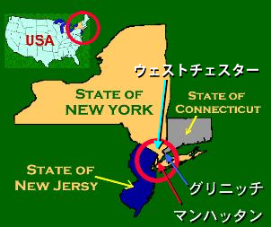

ウェストチェスターってどのような所ですか？|  | 「ウェストチェスター」はニューヨーク市マンハッタンから北に40kmの郊外にあります。電車でも高速でも30〜45分でマンハッタンにアクセスでき、ニューヨーク市への交通の便が良い地域であり、治安も良く、公立学校の教育レベルが高いことから、多くの日本人が住んでいます。ウェストチェスターには日本語補習校、学習塾等あり、隣町のグリニッチには全日制の日本人学校（初等部･中等部）もあり、抜群の教育環境が調えられています。ニューヨークに来たら、是非住んでみたい町の筆頭に挙げられる町です。 |
教会の沿革
 Ridgeway Alliance Church |
●1991年、日本の多くの教会の協力により、ＬＭＩ世界宣教会という宣教団体を通し、近藤泉・美貴子宣教師がＮＹに遣わされて来ました。早速、チャパクワ福音キリスト教会が設立され、地域の日本人に福音を伝える働きが始まりました。 ●1995年7月、地域の日本人の動向の変化に伴い教会はＣＴ州グリニッチに移転、新たに「グリニッチ福音キリスト教会」と名称変更して再出発しました。 以来、教会はグリニッチを拠点にＮＹ（ハリソン、ライ）ＣＴ（グリニッチ、ダリアン、ニューヘイブン）に住む多くの方たちに福音を伝え、多くの方が洗礼を受けて日本に帰国されました。そしてほとんどの方が今なお、日本でアクティブなクリスチャンです。近藤宣教師夫妻は宣教師としての任期を終え2003年６月に帰国されました。 ●2003年6月より、働きはＬＭＩ世界宣教会から遣わされてきた立石尚志・聖美夫妻にバトンタッチされ継続されてきました。 ●2018年3月に神様の導きで、23年間お世話になったセントポール教会を離れ、再び、ニューヨーク州に戻り、新たにリッジェイ・アライアンス教会に宣教の拠点を移し、「ニューヨークめぐみ教会」と名前を改め、再出発しました。 ●2020年はコロナ情勢で、3月半ばからオンライン礼拝が続きましたが、7月に立石宣教師が帰国し、海を挟んでリモートでの礼拝が続けられて来ました。 ●2021年１月より、働きはＬＭＩ世界宣教会派遣の笹川雅弘・由利子宣教師夫妻にバトンタッチされます。渡米時期はなお未定ですが、当面、オンラインで共に教会を立てあげて行きます。 |

|
笹川雅弘 1959年神奈川生まれ。 上智大学卒業後、受洗。企業勤めの間、アメリカ支社に出向。６年半の海外生活を経験した後に東京基督神学校に入学、卒業。2003年より日本同盟基督教団・新潟福音教会に着任し、2006年に正教師按手。2019年3月に新潟福音教会での奉仕を終了し、4月より派遣準備の活動を開始。日本同盟基督教団・支援教師、等々力教会在籍。子どもは一男二女。 笹川由利子（ささかわゆりこ） 大阪府生まれ。中学一年で受洗。短大卒業後、9年ほど企業で働き、結婚により退社。日本同盟基督教団・準補教師。６年半の海外生活の間も御言葉の養いを頂いて信仰が守られる経験をし、今後は在米邦人のために働きたいと願っている。 |